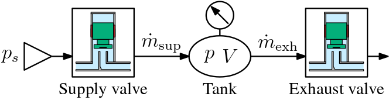

空気圧バルブや圧力制御系を対象として，高速・高精度な制御を実現するための研究に取り組んでいます。 とくに，空気の圧縮性や流体力による非線形外乱が存在する系に対して， モデルベースド制御と反復学習制御を組み合わせたフィードフォワード設計を進めています。
空気圧システムは半導体製造装置，精密位置決め装置，ロボティクスなど幅広い産業分野で用いられています。 一方で，空気の圧縮性や流路共鳴，バルブの非線形性により，高速応答と高精度制御の両立は容易ではありません。 私は，バルブ体位置の内側フィードバック制御と，データ駆動型フィードフォワード制御を組み合わせることで， 流量応答の高速化を実現する研究を進めています。
ここには研究写真，実験装置の概略図，応答波形，あるいは受賞写真などを載せると見栄えが良くなります。

研究に関するご連絡は以下までお願いします。